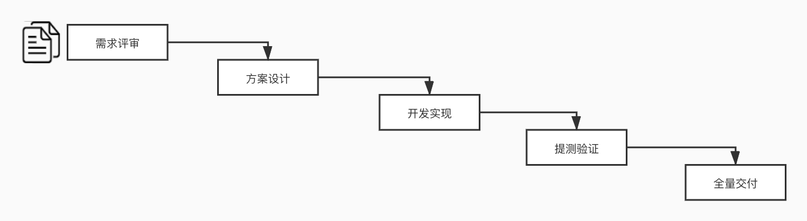
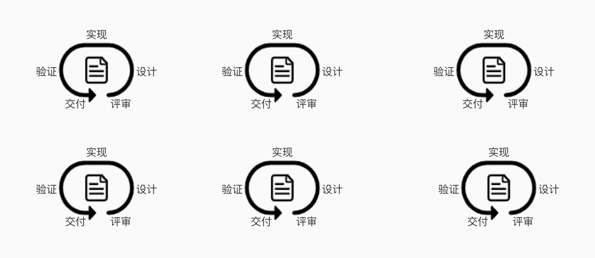

随着业务越来越复杂，团队越来越大，需求越来越多，研发效率增长不能跟上团队人数增长。因此我在Q4开始主导互客研发团队的敏捷交付转型，以下是实践过程中的一些心得。
研发效能
在互联网时代，任何事情都充满了变化，要求团队通过快速的迭代交付来应对快速变化的环境。对于研发团队来说，研发效能正是衡量这一能力的指标。我们可以把研发效能理解为持续快速交付价值的能力。
瀑布模型
产品的交付通常需要多个职能的共同协作，如产品、交互、视觉、前端、后端、测试、算法等等。在传统的研发流程中，各个职能部门通常根据瀑布模型来交付需求版本。如下图：

在瀑布模型中，版本需求、时间、资源是确定的，三个因素相互制约。业务按照固定的节奏进行迭代交付。该模型最大的优势在于可预测性，流程简单，有固定的时间点。但同时带来的问题是缺乏灵活性，进入版本后，调整需求或时间的代价会非常大，并且版本越大时带来的风险和不确定性越大。大多数研发团队采用的正是瀑布模型。
敏捷模型
在敏捷模式中，在固定的时间内（迭代周期）将一个版本拆分为一个个可以独立交付上线的需求，优先交付高优先级（高价值）的需求。如下图：

敏捷模式最大的优势是非常灵活，可以根据实际情况随时调整需求，同时由于交付单元限定在最小范围内，使得上线发布的影响范围最小，风险可控，也可以提高交付质量。并且可以在尽可能短的时间内交付尽可能高的价值。
落地实践
进行敏捷交付的转型前，要先进行足够多的调研和沟通工作，如学习公司内部外部已经做到敏捷交付的团队的经验，并邀约分享。如我就多次要求了PM研发团队的旭东向我们团队分享他们的经验。接着制定初步的方案，比如可以进行小范围的实践，完善工具和流程，并根据实践逐步调整，最后落地到整个团队。在转型的过程中，我总结出的四个最重要的要素，分别是：环境、流程、工具、人。
首先想要进行敏捷交付，需要有能适应敏捷模型的研发环境，包括微服务的架构、边界清晰的业务、可以独立开发测试环境隔离能力，如果研发环境本身还是非常耦合，牵一发而动全身的情况，那就很去难实现敏捷的交付方式。
其次需要制定合理的流程规范。从需求评审、拆分、分优先级到技术方案评审、时间规划、提测标准，最后代码分支管理、测试用例、自动化回归。团队中的每个人必须严格按照流程进行，因为越灵活的方案，背后意味着更多的不可控，所以严格执行流程是非常必要的。
然后是工具，工具和流程是相辅相成的，没有工具，再完美的流程也难以得到良好的执行，因此敏捷的交付需要有相对应的支持工具，并需要让团队的每个成员都熟练的使用该工具。公司PM部门提供的Overmind平台就可以很好的支持敏捷交付的需求。
最后是人，不管是环境、流程还是工具，最后一定都是需要人去执行的，也就是团队中的每个成员，因此团队成员的思维转变是转型中的重点，在工作进行前，首先应该在团队内进行足够的沟通，让每个人理解转型的价值和意义，让每个人都愿意为之努力。当团队达成一致的目标时，离成功就已经不远了。